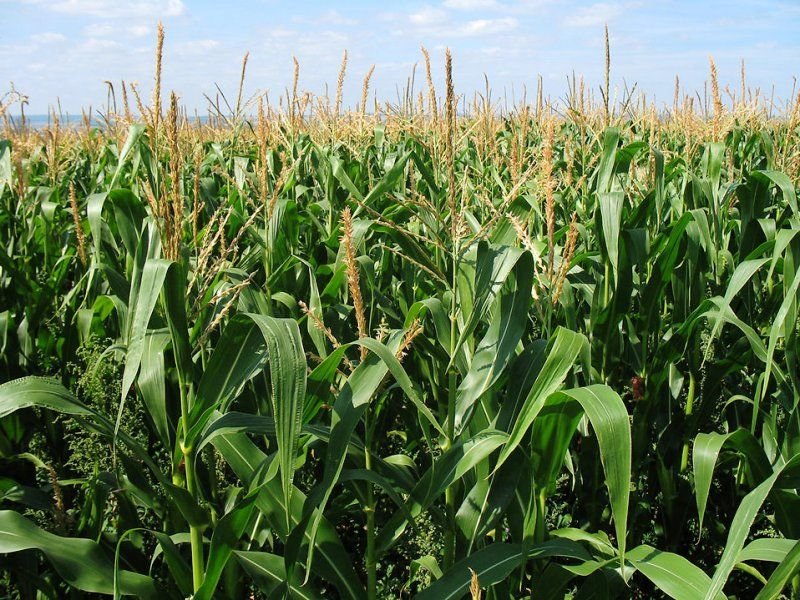

<ion-menu side="start" menuId="menu" contentId="main" type="overlay">
  <ion-content class="profile">

    <div class="header">


      <div class="cover-box">
        
      </div>

    </div>
    <div class="flex">
      <div class="border-orange">
        <div class="border-white">
          <div class="img-box">
            
          </div>
        </div>
      </div>
    </div>
<h2>{{datauser.name_user}} </h2>
<ion-button (click)="dismiss()" expand="block" fill="clear" shape="round">
  Edit Profile
</ion-button>
<ion-list class="profile">
  <ion-item  >
    <ion-icon name="call-outline"></ion-icon>   <p>+213 {{datauser.tel_user}}</p>
  </ion-item>
  <ion-item>
    <ion-icon name="location-outline"></ion-icon> <p>{{datauser.location_user}} , Algeria</p>
  </ion-item>
  <ion-item>
     <ion-icon name="mail-outline"></ion-icon><p>{{datauser.email_user}}</p>
  </ion-item>
</ion-list>
<ion-button (click)="logout()" expand="block" fill="clear" shape="round">
  log out
</ion-button>
</ion-content>


</ion-menu>
<ion-router-outlet id="main"></ion-router-outlet>
<ion-header>
  <ion-menu-button menuID="menu"><ion-icon name="grid" class="menubtn"></ion-icon></ion-menu-button>
</ion-header>


<ion-tabs>
  <ion-tab-bar slot="bottom" color="white">
    <!------------------------------------->
    <ion-tab-button tab="weather">
      <ion-icon name="cloudy-night" color="primary"></ion-icon>
      <!-- <ion-label>home</ion-label> -->
      <!-- <ion-badge>6</ion-badge> -->
    </ion-tab-button>
    <!------------------------------------->

    <ion-tab-button tab="field">
      <ion-icon name="leaf" color="primary"></ion-icon>
      <!-- <ion-label>menu</ion-label> -->
    </ion-tab-button>
    <!------------------------------------->

    <!------------------------------------->
    <ion-tab-button tab="blog">
      <ion-icon name="earth" color="primary"></ion-icon>
      <!-- <ion-label>Map</ion-label> -->
    </ion-tab-button>
    <!------------------------------------->
    <ion-tab-button tab="stats">
      <ion-icon name="stats-chart" color="primary"></ion-icon>
      <!-- <ion-label>Map</ion-label> -->
    </ion-tab-button>
  </ion-tab-bar>
</ion-tabs>
